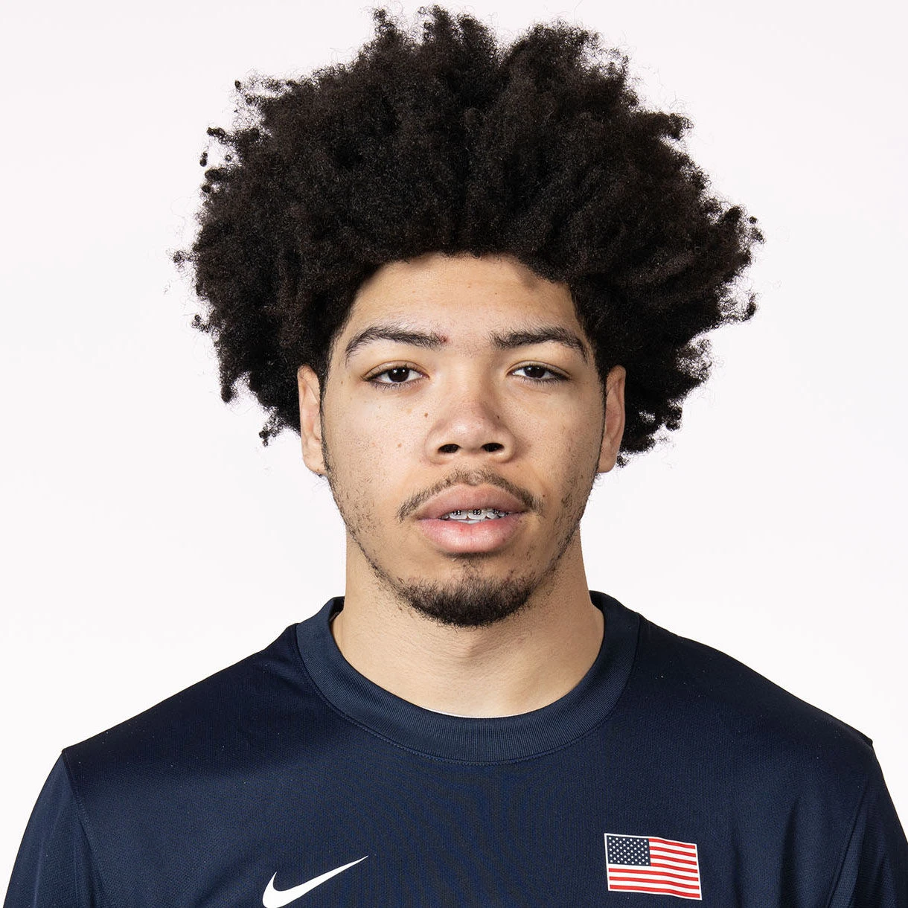

2027 NBA Draft · Preseason Report · Jul 5, 2026
Tyran Stokes
Preseason scouting notes ahead of Kansas's 2026-27 season.

Draft Projection
NBA Role Projection
Stats
No college minutes logged yet — this section fills in once the season tips off.
Info
School: Kansas | Class: FR | Position: SF | Height: 6'7" | Weight: 240 | Wingspan: 7'0"
Physical
He has an elite physical profile at 6'7" and 240 pounds, with an excellent frame and around an 8/10 athletic grade. His combination of explosive vertical pop, strong straight-line speed, size, and strength makes him one of the most physically gifted prospects in the class. He still has room to add muscle, and continued physical development in college could raise his ceiling even further.
Offense
He is devastating in transition, especially when he rebounds and pushes the ball coast to coast. For his size, he is highly skilled, with advanced ball handling, strong finishing ability, and flashes of perimeter shooting. He does a great job collapsing defenses and then finding teammates with dump-offs and kick-out passes. At the same time, he often looked physically superior to his high school competition, which makes it difficult to fully evaluate how much of his scoring will translate. The biggest concern is that much of his offense comes in transition, and in the half court he can struggle to create separation, often relying more on overpowering defenders than on advanced shot creation.
Defense
He has the tools to become one of the most versatile defenders in college basketball. He can protect the rim while also switching onto smaller guards, and he uses his length, mobility, and athleticism to impact plays across multiple positions. His defensive ceiling is that of a prime OG Anunoby.
Outlook
Physically, he resembles Ben Simmons coming out of high school, though with more perimeter skill and less overwhelming physical dominance. How he develops as a half-court scorer and shooter will determine whether he reaches his All-NBA ceiling. His character, competitiveness, and overall progression throughout the college season and pre-draft process will heavily influence how high he rises on draft boards.